Some of my projects
CodeMap
A graphical editor for creating maps of source code.
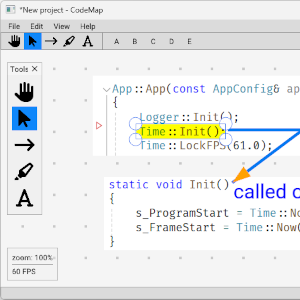Trex
Font rendering, atlas generation and text shaping library written in C++.
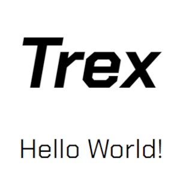LogAlligator
A feature rich log viewer for extremely big files.
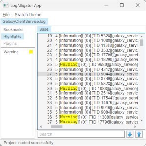tinyevents
TinyEvents is a C++ header-only library for a generic Event-Dispatch System.
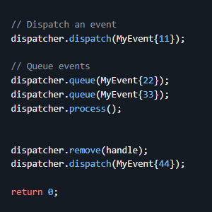Turtle 3D
The turtle known from the Logo program, but this time in 3D. Pure JavaScript and Canvas were used.
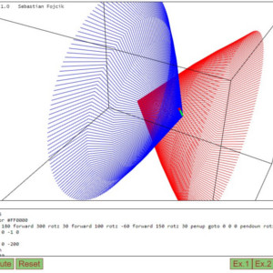Puzzle
A puzzle in which the image is divided into parts. You have to put it back together.
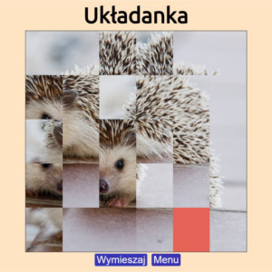The Damn Compiler
An imperative language compiler that compiles code to an abstract assembly language.
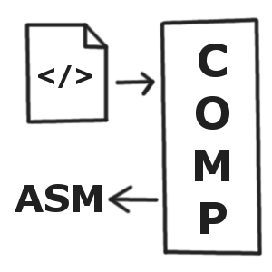Zrozumieć Wektory*
A logic and arcade game in which the player interacts with vectors and observes how they affect the behaviour of the ball.
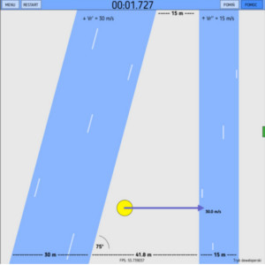Trylma*
An online multiplayer board game with up to 6 simultaneous bot players.
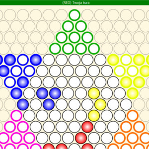Arithmetic Coder
An efficient implementation of the arithmetic coding compression algorithm in C++.
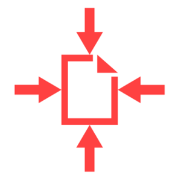pngsafe
An application that hides a file in an image using the steganographic method of modifying the least significant bit.

EtherSim
A sandbox network topology editor in which you can simulate collisions on a link
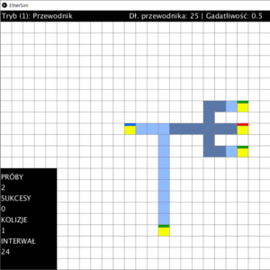
Plotter3D
A web application for drawing 3D plots of functions of two variables.
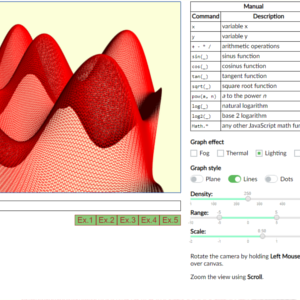* team projects